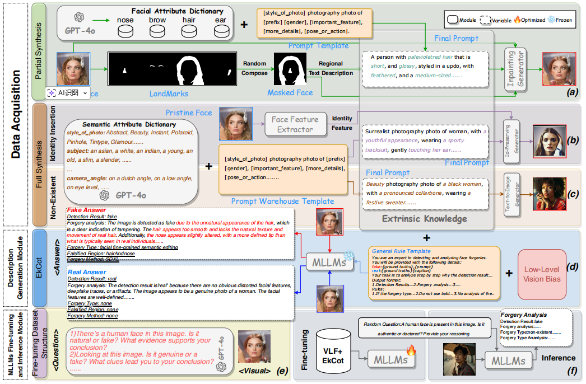

VLForgery Face Triad:Detection, Localization and Attribution via Multimodal Large Language Models
VLForgery Face Triad: Detection, Localization and Attribution via Multimodal Large Language Models
Xinan He1, Yue Zhou2∗, Bing Fan3, Bin Li2, Guopu Zhu4, Feng
Ding1†
1南昌大学
2深圳大学
3University of North
Texas
4哈尔滨工业大学
摘要
基于扩散模型（DMs）合成的高质量、可控属性人脸，给深度伪造检测带来了重大挑战。目前最先进的检测器仅能输出二元判断，无法定位伪造区域、归因伪造手法，也无法分析伪造原因。本研究将多模态大语言模型（MLLMs）整合到基于DMs的人脸取证中，提出名为VLForgery的细粒度分析三元框架，可实现：1）预测伪造的人脸图像；2）定位受部分合成影响的伪造面部区域；3）归因特定生成器的合成。为达成上述目标，我们引入了 VLF（视觉语言取证），这是一个新颖且多样化的合成人脸数据集，旨在促进MLLMs中‘视觉’与‘语言’模态的丰富交互。此外，我们提出了一种外在知识引导的描述方法EkCot，该方法利用图像生成流程中的知识，使MLLMs能够快速捕捉图像内容。同时，我们设计了一个低级视觉比较流程，旨在识别MLLMs固有的真实与伪造差异特征。这些特征随后被整合到EkCot中，增强其按检测、定位、归因的结构化分析伪造的能力。大量实验表明，VLForgery在检测准确性方面优于其他最先进的法医取证方法，并在伪造区域定位和归因分析方面具有额外潜力。
1.引言
人工智能生成的面部图像通过打造逼真的虚拟形象，为人类生活增添了新维度，显著提升了创意产业的体验价值。然而，随着生成模型技术的突飞猛进[8,55,49,12,24,57]，AI生成面部取证领域正面临前所未有的挑战。特别是扩散模型[38,35]生成的合成面部，其逼真度已远超变分自编码器（VAE）[41]等早期技术，使得检测器越来越难以识别细微的伪造痕迹。这一技术突破导致伪造品激增，对个人隐私安全构成了严重威胁。
多项开创性研究[3,17,44,4,48,54]已对扩散模型（DM）生成的图像取证进行了研究，并证实了其提出的模型的有效性。然而，这些方法存在一个显著局限：未能对伪造行为的根源进行清晰分析。具体而言，现有研究大多仅聚焦于检测层面，既未对伪造行为进行定位，也未明确其生成方法。
近期，多模态大语言模型（MLLMs）已成为复杂场景表征的强大工具。通过利用图像和文本的广泛预训练，MLLMs能够通过自然语言解释视觉任务，为法医分析提供更细致的理解[53,14]。然而，基于
MLLM
的模型面临两个主要限制。首先，使用MLLMs进行法医分析研究主要集中在传统的面部替换Deepfake[36,22]上，对基于DM的合成面部分析有限。尽管最近的研究[53,14]表明，由MLLMs（如ChatGPT-4）生成的自动化描述或指导
MLLM
训练的手动注释，能有效捕捉传统面部替换Deepfake中的伪影，但这些方法在生成可信的伪造描述时仍面临挑战，特别是对于高保真DM图像，其微妙伪影常难以被检测。主要问题在于它们依赖于主观的人类定义判断偏差来指导描述的生成，这些描述可能与模型固有的伪造知识不一致。此外，MLLMs通常针对语义级视觉对齐进行训练，缺乏精细的法医感知能力，可能导致生成描述中的幻觉。其次，现有的基于
MLLM 的方法均未尝试同时解决检测、定位和归因的精细Deepfake法医分析。
为了应对这些挑战，我们提出了一种涵盖检测、定位和归因的三重框架，专为人工智能生成的人脸取证设计，称为VLForgery。在该框架中，针对缺乏专门针对基于DM的部分合成人脸的数据，我们创建了多样化的提示库和模板，以构建一个新的多模态视觉语言取证（VLF）数据集，适用于检测、定位和归因这三项任务。
其次，为提升MLLM生成描述的可靠性，我们引入了一套低级视觉差异检测流程，通过识别真实样本与伪造样本间的视觉差异，引导MLLM生成高置信度描述。在此基础上，我们开发了描述生成模块，其中设计了基于外部知识的思维链方法（EkCot）。该方法还整合了生成流程中的附加知识，使模型能快速理解图像内容。第三，我们构建了统一的MLLM微调与推理模块，通过整合生成的图像及其对应描述，实现MLLM的精细化调优。
具体而言，VLForgery通过整合基于深度学习的图像生成相关外部信息与真实图像与伪造图像之间的低级视觉差异，构建了一套系统化的分析方法。该方法使机器学习模型能够通过以下步骤评估图像：1)
检测：判断图像是否为真实或AI生成；2)
定位：针对合成图像，判断伪造是局部（仅特定区域被篡改）还是整体（整幅图像均为合成）。对于局部伪造，需定位被篡改区域；3)
溯源：确定生成伪造图像的可能方法或模型。
我们的贡献可概括如下：
- 我们研究了多语言语言模型（MLLMs）在解决人工智能生成人脸取证挑战中的潜力，并提出了VLForgery框架。此外，我们设计了一种基于外部知识引导的思维链方法（EkCot），该方法可协助MLLMs实现精细的取证性能。
- 我们介绍了 VLF 数据集，这是一个由扩散模型生成的新的多模态视觉语言取证数据集，旨在满足精细取证任务的需求。
- 我们提出了一项全面评估实验，专门用于在细粒度法医任务中评估VLForgery。该评估涵盖三种任务场景及9种基于决策树（DM）的面部类型。
2.相关工作
2.1 DM生成的图像
2.2 基于DM图像的细粒度取证
2.3 多模态大语言模型在法医学中的应用
3.VLForgery框架
随着生成技术的发展，扩散模型等方法应运而生。与传统的生成式AI技术（如 VAE）相比，扩散模型能够通过掩码和文本描述进行部分合成，以及通过身份插入或文本描述实现完全合成。因此，我们的 VLF 数据集涵盖了部分合成和完全合成两种类型。在接下来的部分中，我们将展示如何获取相应的提示和/或图像。此外，我们还将详细阐述在VLForgery中提出的描述生成模块和MLLM微调与推理模块的具体细节。
3.1.数据采集
本节主要阐述数据收集的流程细节。我们根据精细取证任务的要求，对所有DM生成的数据进行了综合处理。关于生成过程的详细说明（包括部分和全部综合）将在后续章节中阐述。如需更详细的数据集介绍，请参阅第B节。

>
图2：VLForgery框架的三个模块构建：数据采集模块、描述生成模块以及MLLMs微调与推理模块。
3.1.1.部分合成
在本节中，我们定义了部分合成的流程。图2(a)展示了典型流程示例。为确保部分合成图像的高质量，我们采用了成熟的CelebAMask-HQ面部数据集[19]作为数据源，该数据集已包含鼻部、眉毛、头发、耳朵、眼睛和牙齿等面部特征的基准点。随后，我们使用GPT-4o生成各面部特征字典及提示模板。针对每张图像，我们随机组合遮罩生成遮罩人脸。基于生成的遮罩人脸，我们选择并组合对应特征的模板，然后从相关特征字典中随机选取描述性关键词填充模板，从而生成图像部分合成的最终提示。在图像生成阶段，我们将生成的遮罩人脸、对应最终提示及原始人脸输入图像修复生成器，生成修复后的图像。
3.1.2.完全合成
我们介绍了两种全合成伪造技术：身份插入生成（图2(b)）和不存在人脸生成（图2(c)）。这两种生成方法都基于相同的提示模板并稍作调整。在人脸身份插入流程中，目标是在新场景中保留原始面部特征。该流程首先通过面部特征提取器捕捉身份特征。而在不存在人脸生成过程中，扩散模型会根据给定提示生成与任何现有个体无关的全新人脸图像。
3.2.描述生成模块
本模块利用低级视觉比较流程和数据采集过程中所需的外部信息，指导构建 VLF 数据集中每种伪造样本的伪造分析描述。在本节中，我们将分别介绍低级视觉比较流程和EKCot的构建工作流。我们提供详细的低级视觉分析，以及您可能需要的所有细节和数据（参见第C节）。
3.2.1 低级特征比较流程
动机：
在先前的研究[46,14]中，研究人员尝试使用视觉大语言模型（VLLMs）为深度伪造生成可解释的描述。然而，在
VQA 任务中常见幻觉现象。与一般 VQA
任务相比，取证分析更侧重于图像细粒度细节的感知。因此，在缺乏监督这些可解释描述的真实标签的情况下，我们如何确定其正确性？
为解决这一挑战，我们旨在寻找模型自身能够理解的取证特征，以区分图像的真实性，从而缓解模型在生成可解释描述时的困难。为此，我们提出了一种利用视觉大语言模型（VLLMs）视觉特征理解能力的低级视觉比较流程，以识别真实样本集与伪造样本集之间的低级视觉差异，如图1所示。
图1：低级视觉的比较流程。通过提取区分真实样本集与虚假样本集最具特征性的低级视觉描述符，我们为多层语言模型（MLLMs）建立了判断偏差。
首先，我们从真实样本集中随机选择一张图像，从伪造样本集中随机选择另一张图像，记为I1和I2。值得注意的是，VLLMs无法区分哪张是真实图像，哪张是伪造图像。此外，为了全面验证真实样本集与伪造样本集之间的低级视觉差异，我们选择了十个不同的方面，并为每个方面设计了相应的描述模板，如\(T_{tem}\)（参见第C.1节）。
首先，视觉编码器Ev对I1和I2进行处理，生成对应的标记表示\(T_{img}\)。随后，这些标记与对比模板标记\(T_{tem}\)一同输入V
LLM（），用于生成低级视觉差异文本Ol。其数学表达式为： \[\begin{array}{l}{T_{i m g}^{1},T_{i m
g}^{2}=E_{v}(I_{1},I_{2}),}\\ {O_{l}^{1},O_{l}^{2}=V L M(T_{i m
g}^{1},T_{i m g}^{2},T_{t e m}).}\end{array}\]
判决偏置滤波：
给定\(O_{l}^{1},O_{l}^{2}\)，我们首先进行分词和词性标注以提取复合名词短语。随后，我们计算每个提取的复合名词短语在所有低级视觉差异文本中的占比。最终，我们筛选出真实样本集与虚假样本集间占比差异最大的前十组短语，将其作为多语言语言模型（MLLMs）的判断偏差。这些短语随后通过预定义模板（参见第C.3节）生成最终可用的判断偏差描述符。
此外，为了避免潜在的模型解释偏差，我们选择
Llama-3.2-11B-Vision [1]模型作为低级视觉比较流程的 VLLM
，以确保与后续阶段使用的模型保持一致。
3.2.2 EkCot的构建
如图2(d)所示，我们采用多语言语言模型（MLLMs）作为描述生成模型，构建了一个用于伪造分析的思维链，命名为EkCot。

我们首先提出通用规则模板，旨在整合生成目标数据所需的外部信息。这些外部信息包括流程中使用的提示、生成图像的对应真实数据，以及低级视觉判断偏差，随后将这些信息整合为多语言语言模型（MLLM）的提示输入。真实情况涵盖多个类别，包括真实/虚假、伪造类型、伪造区域和伪造方法。对于原始图像，默认情况下伪造类型、伪造区域和伪造方法的值均设为‘无’。此外，图像的原始特征作为视觉输入提供给多语言语言模型。我们还使用 Llama-3.2-11B-Vision [1]作为描述生成模型。
3.3 MLLM微调与推理模块
在本模块中，我们设计了最终微调数据结构及MLLMs微调的详细方案。最终微调数据结构。最终微调数据以三元组形式构成：<visual, question, answer>。
针对问题格式，我们采用ChatGPT-4o生成多种问题形式（如图2(e)所示），例如：‘该图像为真品还是赝品？能否说明判断依据？’每个三元组中的问题均采用随机生成格式呈现。此外，每张图像均与其对应的特定描述（即答案）相关联。

针对答案格式，我们设计其用于解决三大核心取证任务：检测、定位与归因。答案格式遵循以下模式：‘检测结果：真实/伪造’ + \(A_{result}\) + ‘伪造类型’ + ‘伪造区域’ + ‘伪造方法’，其中\(A_{result}\)表示检测结果的分析。
在分析流程中，我们的目标是引导模型采用逻辑推理链，按以下步骤依次执行：
1）真伪判断：首先评估图像的真实性。若判定为伪造图像，则将其伪造类型进一步划分为三类：局部合成、身份插入和不存在的面部特征。随后对检测结果进行深入分析。
2）伪造区域定位：若涉及局部合成，需识别具体修改区域（如鼻子、眉毛、头发、耳朵）。对于多部位修改案例（如头发和鼻子），需逐个定位伪造区域。 3）合成面部生成器归属：最终步骤确定合成面部的生成器类型。
微调与推理过程。
我们通过一个结构化的两步流程（图2(f)）在最终微调数据上对MLLMs进行微调。

受LLaVA [25]的启发，我们采用了他们发布的 Llava-1.5-7B 模型和训练架构。首先，我们微调一个投影器，以使从冻结的CLIP视觉编码器中提取的面部视觉特征与相应的提问文本特征对齐。这种对齐将合成人脸的伪造伪影与相应的事实和详细的伪造描述联系起来。其次，我们采用低秩适应（LoRA）[13]（秩=128，α=256），通过仅调整LoRA参数选择性地更新模型，从而有效地微调预训练的语言模型。
推理阶段，输入数据采用元组 <image，question>
的结构。针对各类问题，我们持续使用ChatGPT-4生成多样化提问格式，确保输入数据的多样性。最终，模型的输出结果采用与最终微调数据答案格式相似的结构。
该方法确保模型根据预定义的推理框架，以结构化、分步的方式对输入人脸进行法医分析，从而提升其细粒度伪造分析能力和法医准确性。
4.实验
4.1.实验设置
数据集：
实验中所有面部样本均来自 VLF 。 VLF
数据集由12个子集组成，每个子集按4：1的比例分为训练集和测试集，如表1所示。
比较基线模型：
我们选择了四种类型的模型进行评估：
1) 简单卷积神经网络（CNNs）：Xception [6]，Resnet-50 [11]。
2) 典型频率检测器： SPSL [26]，F3Net [33]， SRM [29]，NPR [40]。
3) 典型空间检测器：GramNet [28]，SAFE [20]，CNNspot [43]， DRCT
[3]。
4) 基于 VLLM 的方法：CLIPping [17]， Llava-1.5-7B [25]，
Qwen2.5-VL- 7B [47]， Llama3.2-11B-Vision [1]。
实施细节：
所有实验均基于PyTorch，并使用8
NVIDIA RTX
L40进行训练。在训练过程中，我们采用Adam优化器，学习率为2e-5，批量大小为128，训练3个周期。
4.2.多任务取证评估
4.2.1 任务1：人脸真伪检测
4.2.2 任务2：定位伪造区域
4.2.3 任务3：综合面孔的来源模型归因
4.3.消融研究
4.4.定性研究
5.结论
本文介绍了VLForgery，一个专为精细取证场景设计的人工智能生成面部框架。针对部分合成面部数据集的缺乏，我们构建了 VLF 。此外，我们还介绍了EkCot，它提供了伪造伪影的精细分析。通过广泛的评估，所提出的框架表现出色。